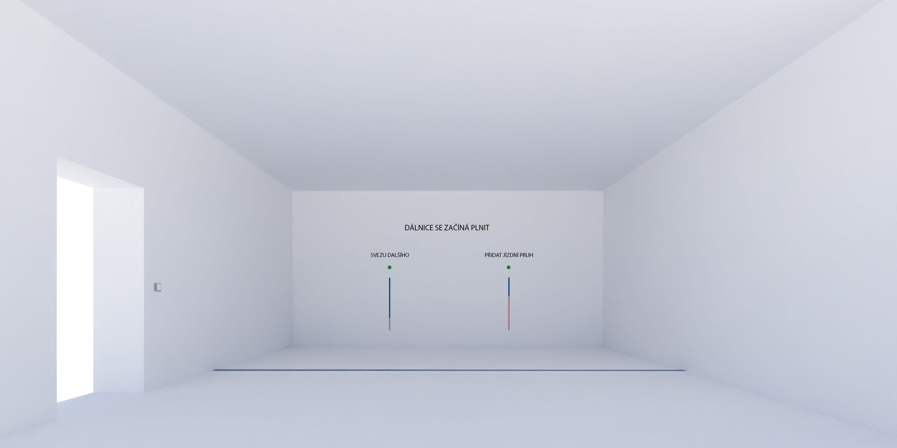

DÁLNIC-E
Filip Trokšiar, Valentýna Zítková, Markéta Kučerová; projekt předmětu NI-CCC v zimním semestru 2023

Anotace
Dálnice dnes představují důležitou dopravní tepnu, která zajišťuje rychlý převoz zboží a hlavně lidí. Umožňuje nám dopravovat se do zaměstnání a překonávat tak větší vzdálenosti. Zároveň ale funguje jako bariéra, přes která dělá zvěři ohraničení teritoria. Zábírá v krajině tu nejvzácnější půdu - zemědělskou a její hluk a spaliny kolem ní dělají pásmo bez života. Na dálnici je každý anonymní, jedno auto vedle druhého a kolona se stává kolektivní vinou, která má vždy menší dopad na jednoho. Naše instalace se proto zabývá volbou jedince, který může ovlivnit svým rozhodnutím situaci na dálnici.
Podoba místnosti
Návštěvník je před vstupem vyzván, aby rozsvítil. Zmáčknutím tlačítka na dálnici vyjíždí svým vozem. Na podlaze místnosti jsou nainstalovány jízdní pruhy dálnice. Momentálně z nich svítí pouze 2. Na nich jsou projektovány tečky symbolizující auta. Ty se pohybují ve směru jízdních pruhů a tvoří tak dopravní situaci. Tedy co člověk, to jednotlivé auto. Dálnice se s příchodem nových lidí začíná čím dál tím více plnit a začínají se dělat kolony.
Druhou část výstavy představují dvě jednoznačné volby. Řidič, který již vyjel svým vozem na dálnici svoji volbu nemůže vzít zpět. Dopravě může ale pomoc. Na protější zdi budou instalovány dva spínače propojené s odpočítávačem. Nad nimi bude heslo: Dálnice se začíná plnit a pod nimi dvě možnosti - 1)přidat jízdní pruh a 2) svezu dalšího. Po překročení hranice počtu hlasů se v případě 1) rozsvítí jízdní pruh a další auta budou přiřazeni do nově vzniklého 2) řidiči zvolí systém spolujízdy a za každý hlas se odečte jedno auto. Dopravě se ulevilo? V pokoji ale stále šumí dálnice.

Dálnici svým autem již zaplnili předchozí lidé a je nutné s dopravní situací něco dělat. Na zdi jsou dvě možnosti, jak situaci vyřešit. Každý má právo si zvolit, co se s jeho autem stane. Buď zvolí možnost spolujízdy a nebo rozšíření dálnice. Jednotlivé počty budou zobrazeny pod volbou. Po naplnění jistého počtu hlasů se dálnice rozšíří o jeden pruh nebo ubydou auta v závislosti na počtu spolujízd. Je vše vyřešeno?
Dálnice se začíná uvolňovat. Nebo ne? Přidání jízdních pruhů není dlouhodobě udržitelnou strategií. Auta nemizí, spíš naopak. Další auta přibývají, protože chodí noví lidé. Každý má odpovědnost za svoji volbu.